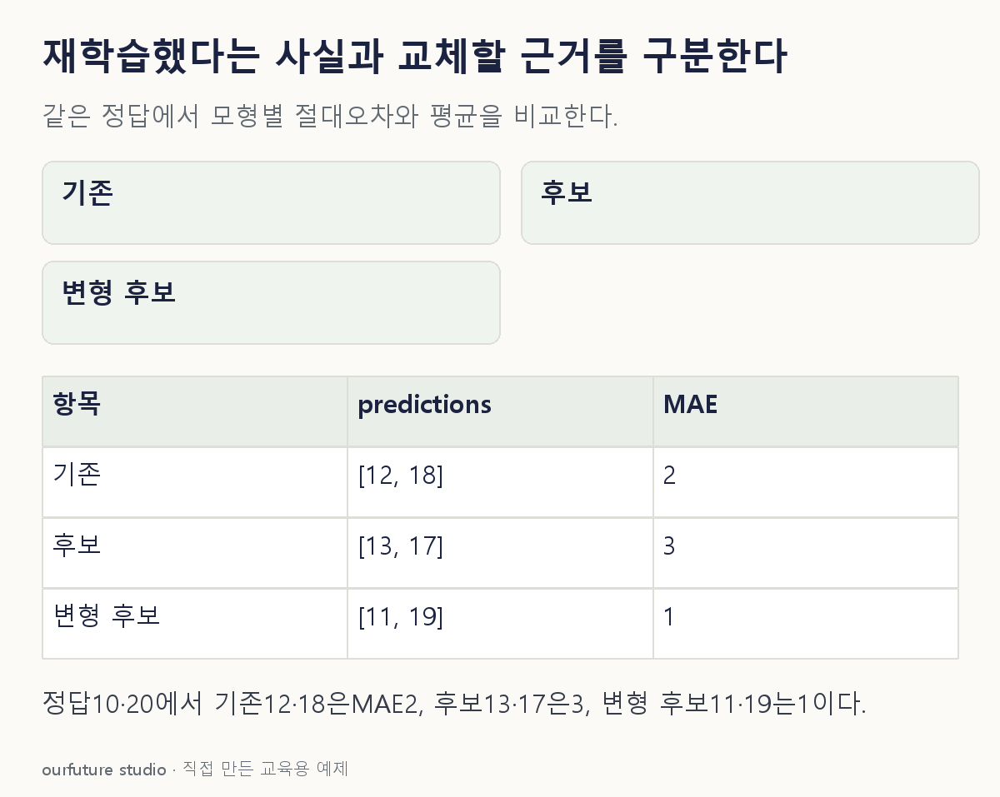

조건을 바꾸며 확인하기
자체 두 건의 검증 결과다. 실제 재학습·배포·통계적 우월성 검정이나 자동 교체를 수행하지 않는다.
설명 그림과 비교하기
아래 그림과 표는 고정된 설명 예제입니다. 기본·변형 중 어떤 조건인지 캡션을 읽고, 바꾼 입력의 결과는 계산 칸에서 확인하세요.

같은 문제를 직접 골라 보기
같은 검증 정답 [10,20]에 기존 예측은 [12,18], 재학습 후보의 예측은 [13,17]이다. 낮은 MAE가 기준이고 다른 조건은 같다.
조건을 더 바꾸면?
같은 검증 정답에서 새 후보의 예측만 [11,19]로 바꾸면 MAE는? 이것만으로 영구적인 개선이 보장되는가?
변형 풀이 확인
후보 MAE는 1이다. 이 구간의 개선 근거이지만 영구적 개선을 보장하지 않는다.
두 절대 오차는 각각 1이다. 합의한 다른 성능·지연·비용 조건, 평가의 불확실성과 운영 후 변화를 추가로 살펴야 한다.
재학습은 작업, 교체는 비교 후 판단.